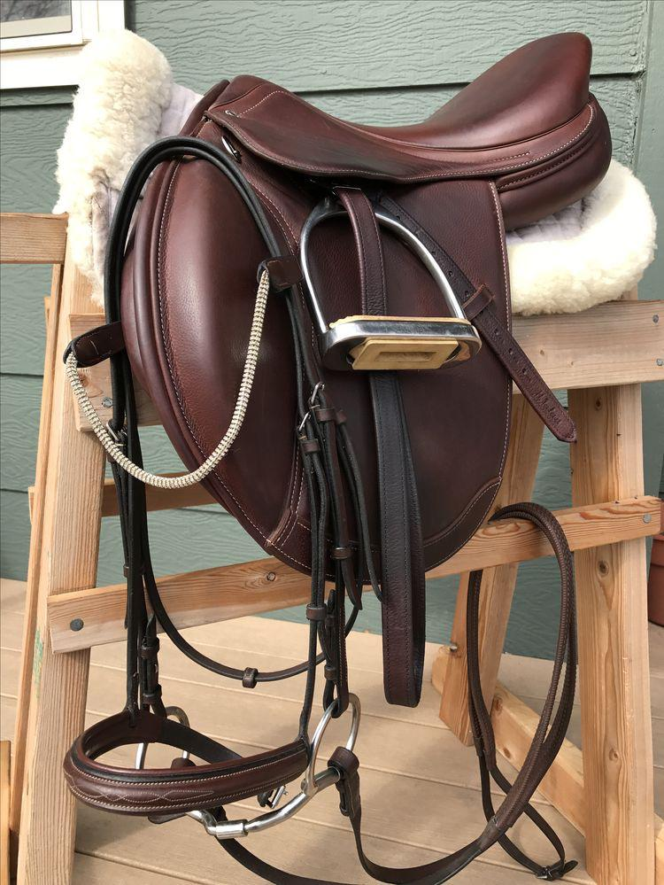
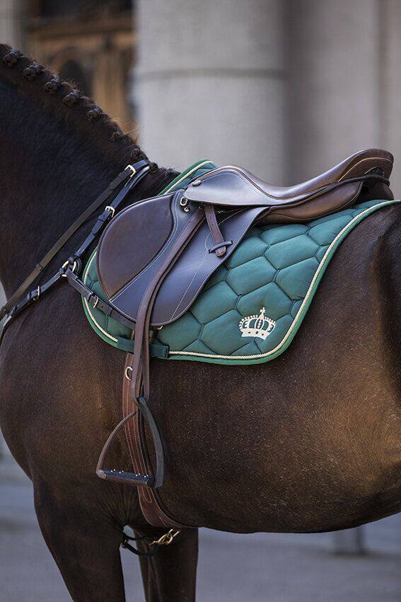
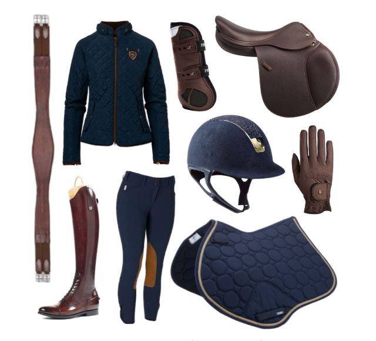

- عباره عن جسم داعم للراكب او اي حموله اخرى
- طريقه الاستخدام:
- تثبت على ظهر الحيوان بروابط خاصة

(السرج)

(وسادة السرج)
- عبارة عن وسادة مصنوعة من أقمشة مختلفة ومليئة بمواد ناعمة من الداخل. يمكن أن يملأ الفراغ بين السرج وظهر الحصان ، ويمنع السرج من فرك ظهر الحصان مباشرة ، ويمنع إصابة الحصان.
- يجب ألا يكون حجم الوسادة صغيرًا جدًا أو سميكًا جدًا لمنع السرج من الانزلاق.

حدوة الحصان
- عتبر الحافر من أهم أعضاء الحصان، وهو حذاء الفرس الذي يساعد الحصان على السير والعدو، وإذا تلف الحافر فإن الحصان يعجز عن الحركة

(فرشه العناية بالخيل)
- تتحسن صحة الخيل عن طريق التمشيط لتنشيط الدورة الدموية ويؤدي إلى تطويل شعر الخيل، مما يجعله ذو مظهر لائق، وبالتالي يقوي ويحفز الجلد والعضلات، كما أن التمشيط يحفز إفراز المادة الدهنية التي تحمي جلد الخيل.

(ادوات السلامه)
- يمكن أن يكون ركوب الخيل رياضة خطيرة، حيث أن القيادة بأمان تعني الحفاظ على الراحة وعدم ترك الإصابات تدمر المتعة، حيث لن تبقيك معدات السلامة خاليًا من الإصابات تمامًا ولكن في حالة وقوع حادث قد تساعد في تقليل شدة الإصابات.